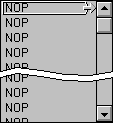
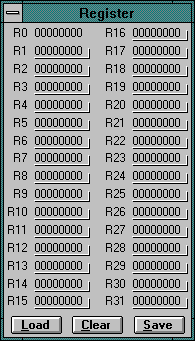

<!DOCTYPE html PUBLIC "-//W3C//DTD HTML 4.01 Transitional//EN">
<html>
<head>
    <style>
        body {
            max-width:1250px;
        }
        body, table, td {
            font-size:14px; 
            font-family: Arial, Helvetica, sans-serif;
        }
        h3 {
            font-weight: bold;
            font-size:16px;
        }
        .section-image {
            padding-right: 5px;
        }
        .text-address {
            font-size: 9px;
        }
        .text-code {
            font-family: monospace;
            font-size: 15px;
        }
    </style>

    <meta http-equiv="content-type" content="text/html; charset=utf-8">
<!--font table contains 3 fonts total-->
</head>
<body>
	<div id='divhlpmain'>
		
		Table of Contents:<br>
		<ul>
			<li><a href="#about-MIPSIM">1. <u>About MIPSim</u></span> </a>:
				a brief description of MIPSim<br>
			</li>
			<li><a href="#getting-started"> 2.<u>Getting started</u>: </a>
				first test of the programs functionality
			</li>
			<li><a href="#tutorial">3.<u>Tutorial</u>:</a>
				a step by step introduction to working with MIPSim
			</li>
			<li><a href="#main-window"> 4.<u>The main window</u>:</a>
				description of the main window as appearing after the start
			</li>
			<li><a href="#assembler-window">5.<u>The assembler window</u>:</a>
				how to edit, load and store the programs you simulate
			</li>
			<li><a href="#data-window">6.<u>The data window</u>:</a>
				displaying and editing the data memory's contents
			</li>
			<li><a href="#register-window">7.<u>The register window</u>:</a>
				displaying and editing the register's contents
			</li>
			<li><a href="#printing">8.<u>Printing</u>:</a>
				how to print out the schem<sup>K</sup>atics state
			</li>
			<li><a href="#troubleshooting">9.<u>Troubleshooting</u>:</a>
				... just in case
			</li>
			<li><a href="#desinstalling">10.<u>Deinstalling MIPSim</u><br></a>
			</li>
			<li><a href="#schematic">11.<u>The schematic</u>:</a>
				about MIPSims processor schematic and its components
			<ul>
				<li><a href="#schematic-alu">Arithmetic Logic Unit</a></li>
                <li><u>Adder</u></li>
                <li><u>Constant Value</u></li>
                <li><u>Instruction Memory</u></li>
                <li><u>Data Memory</u></li>
                <li><u>Register</u></li>
                <li><u>And Gate</u></li>
                <li><u>Sign Extension Unit</u></li>
                <li><u>Multiplexor</u></li>
                <li><u>Control Unit</u></li>
                <li><u>Latch</u></li>
                <li><u>Program Counter</u></li>
			</ul>
		</ul>
<p><hr><p>

<h3 id="about-MIPSIM"> About MIPSim</h3>
<p>MIPSim is intended to be a supplement to the book:</p>
<p><b>&nbsp;&nbsp;&nbsp;&nbsp;&nbsp;&nbsp;&nbsp;&nbsp;
Computer Organization an Design<br>
&nbsp;&nbsp;&nbsp;&nbsp;&nbsp;&nbsp;&nbsp;&nbsp;
The Hardware/Software Interface
</b></p>
<p>by <b>John L. Hennessy</b> and <b>David A. Patterson</b>.</p>
<p>
    While this book is an excellent introduction to the basics of computer architecture, experience shows that many students, especially those coming from less hardware-oriented studies, encounter difficulties in understanding the consequences and even concepts of pipelining. Presenting the dynamic process of instructions floating through a pipeline using cycle diagrams often appears somewhat clumsy to students with little or no previous knowledge of computer architecture and digital logic design.
</p>
<p>
    MIPSim was designed to offer a more feasible way of demonstrating a pipelined architecture.<br>
    It simulates and visualizes what happens within a pipeline similar to the pipelines presented in the above mentioned book and thus may hopefully aid its readers in understanding the basics of pipelining.<br>
    The user can write small programs (although currently there is only a subset of the MIPS instruction set implemented) and watch the pipeline doing its work, modify the program and the content of data memory and register file 'on the fly' and go on simulating to see the effects.<br>
</p>
<br>

<p>
    Vienna University of Technology<br>
    Institut für Technische Informatik<br>
    Prof. Herbert Grünbacher
</p>
<p class="text-address">
Treitlstraße 3/182-2<br>
A-1040 Vienna/Austria<br>
<br>
Tel.: +43 (1) 58801 - 8150 Fax.: +43 (1) 5869697<br>
<a href="mailto:hg@vlsivie.tuwien.ac.at" target="_blank"> email: hg@vlsivie.tuwien.ac.at</a><br>
<a href="http://www.vlsivie.tuwien.ac.at/welcome.html" target="_blank"> http://www.vlsivie.tuwien.ac.at/welcome.html</a><br>
</p>

<p><hr><p>

<h3 id="getting-started">Getting started</h3>
<p>If you should encounter problems in running this program, please see chapter 9: <a href="#troubleshooting">Troubleshooting</a></p>
<p>
    For a quick test of the programs functionality, there is an example program to demonstrate the simulator.<br>
    To load it:
</p>
<ol>
    <li>
        select FILES from the main menu
    </li>
    <li>
        select OPEN from the drop-down menu
    </li>
    <li>
        in the file-listbox, double-click on <i>demo.mp</i> <b>or</b><br/>
        select it and click the OK-button.
    </li>
</ol>
<p>
    The listbox at the left of the schematic should contain some opcodes.
</p>
<p>
    To start the simulation, first drag the opcode-arrow  at the arrow on its right side onto the first opcode (in case it isn't already there) to instruct MIPSim it should start with this one (this symbol indicates the line at which the opcodes leave the listbox).
</p>
<p>
    Now click on the Simulation-Start button  or select SIMULATION from the main menu and then START from the drop-down menu.
</p>
<p>
    You should now see the instructions 'floating' through the pipeline, i.e. being shifted through the top line of the schematic. Each instruction entering the pipeline has a certain color assigned, and the buses and connections are continually redrawn in the same color to reflect the 'flow' of the corresponding signals.
</p>
<p>
    If the pipeline works, you can start with the <a href="#tutorial">tutorial</a>. In case of troubles see chapter 9: <a href="#troubleshooting">Troubleshooting</a>.
</p>

<p><hr><p>

<h3 id="tutorial">Tutorial</h3>
<p>This tutorial provides a brief introduction to simulating with MIPSim.</p>

<p>When you start MIPSim, <a href="#main-window">the main window</a> pops up.<br>
You see the the schematic of the processor with all buses in grey, indicating that their state is undefined as no instructions are in the pipeline.</p>

<p>There are three special symbols within the schematic:<br>
The instruction memory (labeled <i>instr.</i>), the register file (<i>register</i>), and the data memory (<i>data</i>).<br>
Clicking on one of these symbols opens a dialog which lets you modify its contents.</p>

<p> To enter a small program, click on the instruction memory symbol within the schematic.</p>

<p><a href="#assembler-window">The assembler window</a> appears.<br>
After clicking on a field within the opcode-column, it receives the caret and you can edit its contents.<br>
Now click on the topmost field in the opcode-column and type:</p>
<p class="text-code">
LW $1,0($0)
</p>

<p>then press <i>&gt;ENTER&gt;</i>.<br>
MIPSim performs a syntax-check, and if the input is correct, the caret is set to the next line (within the opcode column).</p>

<p>Now try an incorrect input, for example:</p>
<p class="text-code">
ADD $1&nbsp;&nbsp;
&nbsp;&nbsp;&nbsp;&nbsp;&nbsp;&nbsp;&nbsp;&nbsp;
(correct opcode, but wrong parameter format)
</p>

<p>On<i>&gt;ENTER&gt;</i>, a window pops up, stating that the input was syntactically incorrect and, as MIPSim recognizes the ADD opcode, displaying the expected format.</p>

<p>
In case of an incorrect input, the caret remains within the current field and the text is selected for overwrite to let you correct its contents.<br>
If you clear the input with the <i>&lt;DEL&gt;</i> key and press <i>&lt;ENTER&gt;</i>, MIPSim reverts to the instruction that was previously entered for this memory location. If you enter a single blank, MIPSim replaces the instruction with a NOP.
</p>

<p>
Now please enter the following lines immediately below the LW $1,0($0):
</p>

<p class="text-code">
NOP<br>
NOP<br>
NOP<br>
ADD $3,$1,$2<br>
SUB $4,$1,$2<br>
OR $5,$1,$2<br>
</p>

<p>
Click on the close-button, and the assembler dialog disappears.
</p>
<p>
Back in <a href="#main-window">the main window</a>, you should see the previously entered assembler statements listed in the listbox to the left of the schematic (maybe you need to scroll up to see the top line).<br>
This listbox also contains the opcode arrow , which indicates the line where the opcodes leave the listbox to enter the pipeline. Make sure it is positioned on the first line (the LW-instruction); if necessary, drag it at its right edge.<br>
The short example program loads a value from the data memory into register $1 and then performs some operations based on the values in registers $1 and $2. Therefore we need to enter the initial values for those registers.<br>
The value for register $1 is loaded from the data memory, so we have to put a value into the appropriate memory location.<br>
The contents of the data memory can be examined and modified in a similar way as with the instruction memory, namely by clicking on the data memory symbol (labeled <i>data</i>).<br>
The <a href="#data-window">data window</a> pops up:<br>
</p>
<p>
The listbox shows the data memory's contents. You may modify any of the words, just click on it and edit the text. The numbers are always given in hexadecimal format.<br>
So, click on the leftmost value within the first line, which is the data word at address 0, and enter 5. Then click on the close-button, and the data dialog should disappear.<br>
</p>
<p>
The value for register $2 must be entered directly into the register. To do so, click on the register file.<br>
The <a href="#register-window">register window</a> pops up:<br>
</p>
<p>
You see editable fields for each register (except $0, which is hardwired to 0).<br>
Click on the value of $2 and enter 3 and hit <i>&lt;RETURN&gt;</i> (again, values are given in hexadecimal).<br>
</p>
<p>
Now, we have the initial values for the two registers we use. You could close the register window now (by clicking on the close-button in the upper right corner, by clicking on the register button in the toolbar, or by clicking on the register file symbol within the schematic. However, to provide the opportunity of watching the registers contents change on running a program, you can also keep the register dialog open. Just resize it so that the registers youre interested in are visible and move the dialog to an appropriate place.
</p>
<p>
Make sure the opcode arrow is positioned on the first line (the LW-instruction); if necessary, drag it at its right edge.<br>
Now we are ready to start the simulation.<br>
</p>
<p>
So, click on the play-button . The first instruction should immediately shift into the pipeline, and you should see the signals on the buses in the same color as the opcode appearing in the line above the schematic. In play mode, you can watch the signals propagate on the buses. Slow mode  and fast mode  offer different signal propagation speeds. However, if you just want to see the results of each step, you can use the step-button .<br>
</p>
<p>
When the instructions reach the write-back stage, the register contents should be updated accordingly in the register dialog.
</p>
<p>
Wait until the last instruction has shifted through the pipeline (only NOP's left in the top line), 
 then stop the pipeline by clicking on the stop button .
 The listbox scrolls back up to the first opcode and all buses now appear in grey indicating an undefined state.
<br>
The results should be in the registers $3,$4, and $5.
</p>
<p>
We have watched the signals shift through the pipeline stages and got the expected results in the registers.
</p>
<p>
Now, let's take a closer look at the pipeline's work.
</p>
<p>
Make sure the program is reset and the opcode arrow is located at the first instruction (LW).<br>
Now click once onto the step-button within the toolbar .
</p>
<p>
The LW-instruction enters the instruction fetch (IF) stage of the pipeline.<br>
Click repeatedly on the step-button until the ADD-instruction is in the execution stage (EX).
</p>
<p>
MIPSim enables you to inspect the current state of each bus. Click (with the left mouse button),
 for example, once on each of the two <a href="#schematic-alu">ALU</a>-inputs and once on the ALU-output.<br>
For each of the buses, a label pops up, displaying the current state of the bus in hexadecimal,
 and the value of the output bus should be the sum of the values of the input buses.<br>
Likewise, you can inspect any other bus within the schematic.<br>
</p>
<p>
Now click once again on the step-button. The labels are updated automatically when the state of the bus changes.
 So, when simulating, you can activate the labels on the buses you are interested in and 
 MIPSim updates the values as the instructions shift along.
</p>
<p>
To hide a label, just click once on it, and it disappears.<br>
Alternatively, by clicking on the clear labels button ,
 all labels can be removed.
</p>
<p>
In this example, we have three NOPs after the load instruction.
 Their purpose is to delay the execution of the commands referencing the loaded value until the registers
 are updated accordingly. Now lets see what would happen without them:<br>
Mark the ADD, SUB and OR instructions, i.e. click the left mouse button on the line containing the ADD statement
 (preferably within the address column) and move the mouse to the line with the OR statement,
 then release the mouse button. These three lines should appear in red. Now, 
 drag them up right behind the LW instruction: click the <i>right</i> mouse button
 on one of the marked instructions and move the mouse up. 
 MIPSim draws an insertion mark where the lines will be inserted upon releasing the mouse button. 
 So, move the mouse up until the insertion mark is right behind the LW instructions and then release 
 the mouse button.
</p>
<p>
Now, clear the values in the registers $3-$5 to zero, 
 either by directly entering the zeroes or by clicking the clear button in the register dialog 
 and reentering the value 3 for register $2.
</p>
You may want to inspect the write inputs and the outputs of the <u>register file</u>,so click on them once to get the labels.<br>
<br>
Start the simulation again, and you will see the processor calculating nonsense, because the result from the LW instruction is not written to the register file on time.<br>
<br>
Alternatively, instead of moving the NOPs, you can use the opcode-arrow  to modify the order of execution: To do so, simulate in single step mode using the step-button , and right after the first step drag the opcode-arrow from the first NOP directly onto the ADD-instruction, thus omitting the NOPs from execution.<br>
<br>
With the presented features, you can write your own programs and examine what the pipeline does.<br>
There are also some more examples (demo1 - demo3) you may want to try out.<br>
<br>
The contents of the instruction and data memories as well as the content of the register file may be saved/loaded separately by clicking the save/load buttons. LOAD/SAVE from the FILE menu loads/saves the contents of all three of them.<br>
<br>

<p><hr><p>
<sup>+</sup><font size="2"><br>
<sup>#</sup></font><font face="CG Times"> <font face="Arial"><font size="3"><span id="main-window">The main window</span><u><font size="4"><br>
</font></u></font></font></font><font size="2"><br>
<span style="font-size:9pt">The main window ist mostly occupied by the processor schematic. It shows the five stages (labeled right above) of the processor, each reduced to the most relevant architectural units : the<u> PC</u></span></font>, the <u>instruction</u> an <u>data</u> memory, the <u>ALU</u>, the <u>main control unit</u>, the <u>register file</u> each separated by <u>latches</u>.<br>
<br>
<br>
 The listbox to the left of the schematic shows the content of the instruction memory as an assembler program. The listbox scrolls up as the simulation goes on, and the instructions move into the pipeline, each in the corresponding color.<br>
The arrow-symbol  marks the line where the opcodes leave the listbox. By dragging it at the right edge it can be moved up and down the listbox, thus making it possible to determine how many of the previous and following lines of code should be visible. It can also be used to select the next opcode to enter the pipeline. Note: The opcode arrow does not scroll along with the listbox content. So, upon scrolling the listbox, you may have to adjust its position.<br>
<br>
<br>
Above the schematic, right below the caption of the main window, there is the toolbar:<br>
<br>
It gives quick access to the most common commands, namely (from left to right):<br>
<br>
 Open the <a href="#assembler-window">assembler window.</a><br>
 Open the register window.<br>
 Open the data memory window.<br>
<br>
 Remove all labels from the schematic.<br>
<br>
 Start the simulation.<br>
 Pause the simulation.<br>
 Stop the simulation.<br>
 Simulate fast.<br>
 Simulate slow.<br>
 Perform a single step.<br>
<br>
 Print the current schematic state (including labels).<br>
 Display the about dialog.<br>
 Display this online help.<br>
<br>
<p><hr><p>
<sup>+</sup><font size="2"><br>
<sup>#</sup><font size="1"><font size="3"><span id="assembler-window">The assembler window</span><u><font size="4"><br>
</font></u></font></font></font><font size="2"><br>
<span style="font-size:9pt">Within the assembler window, you can enter and modify the contents of the program memory.<br>
It can be opened in one of three ways:<br>
</span></font><br>
1. Via the main menu by selecting INSTRUCTION MEMORY/VIEW.<br>
2. By clicking on the assembler button  in the toolbar<br>
3. Or by clicking on the symbol labeled instruction memory within the schematic.<br>
<br>
<br>
The listbox on the left contains the actual program. It consists of four columns:<br>
<br>
&nbsp;&nbsp;&nbsp;&nbsp;&nbsp;&nbsp;&nbsp;&nbsp;
address: displays the (byte) address.<br>
&nbsp;&nbsp;&nbsp;&nbsp;&nbsp;&nbsp;&nbsp;&nbsp;
label: displays a label used as a branch or jump target.<br>
&nbsp;&nbsp;&nbsp;&nbsp;&nbsp;&nbsp;&nbsp;&nbsp;
opcode: The opcode itself.<br>
&nbsp;&nbsp;&nbsp;&nbsp;&nbsp;&nbsp;&nbsp;&nbsp;
word: The opcode in hexadecimal (four bytes).<br>
<br>
You can change the content of any field in the label, opcode and word columns by selecting it and editing the text; the address column is read only.<br>
<br>
The labels entered in the label column may be used as the destination address in a BEQ or a BNEQ instruction. However, as this is a line-by-line assembler, each label has to be defined before it can be referenced.<br>
<br>
When you enter an opcode in the opcode-column, MIPSim automatically performs a syntax check and notifies you if the entry is syntactically incorrect.<br>
<br>
The listbox on the right shows the available instructions as well as their syntax (this is just informational; selecting instructions will <i>not</i> copy them to the assembler listbox).<br>
<br>
<br>
The OK button  closes the window.<br>
<br>
With the clear all button , the instruction memory content may be reset to contain all zeroes, ie. NOPs.<br>
<br>
The load button opens a file dialog displaying all previously saved programs in the active path (*.mp).<br>
To load one, double-click it or select it and click the OK button.<br>
<br>
Click  if you want to save the current program to disk. In the file dialog, enter the name to be used and click ok (or press ENTER). MIPSim will ask for confirmation if the given file already exists.<br>
<p><hr><p>
<sup>+</sup><font size="2"><br>
<sup>#</sup><font size="1"></font></font><font face="CG Times"><font size="2"> <font face="Arial"><font size="3">The data window<u><font size="4"><br>
</font></u></font></font></font></font><font size="2"><br>
<span style="font-size:9pt">This window may be used to display and modify the contents of the data memory.<br>
It can be opened in one of three ways:<br>
</span></font><br>
1. Via the main menu by selecting DATA MEMORY and then VIEW from the popup menu.<br>
2. By clicking on the data memory button  in the toolbar<br>
3. Or by clicking on the symbol labeled data memory within the schematic.<br>
<br>
The listbox contains four columns of data words a line, each preceded by the adress of the first data word. You can edit any data word by clicking on it. Number format is hexadecimal.<br>
<br>
The OK button  closes the window.<br>
<br>
With the clear all button , the data memory content may be reset to contain all zeroes.<br>
<br>
The load button opens a file dialog displaying all previously saved memory files (*.md).<br>
To load one, double-click it or select it and click the OK button.<br>
<br>
Click  if you want to save the current data memory content to disk. In the file dialog, enter the name to be used and click ok (or press ENTER).<br>
<p><hr><p>
<sup>+</sup><font size="2"><br>
<sup>#</sup><font size="1"></font></font><font face="CG Times"><font size="2"> <font face="Arial"><font size="3">The register window<u><font size="4"><br>
</font></u></font></font></font></font><font size="2"><br>
<span style="font-size:9pt">This window displays the contents of the registers and lets you modify them by clicking on a value.<br>
It can be opened in one of three ways:<br>
<br>
1. Via the main menu by selecting REGISTERS and VIEW from the popup-menu.<br>
2. By clicking on the registers button  in the toolbar<br>
3. Or by clicking on the symbol labeled register file within the schematic.<br>
<br>
<br>
Click the load button  to open a file dialog in which you can select a *.mr-file containing previously saved register contents.<br>
<br>
The clear button  resets all registers contents to zero.<br>
<br>
By clicking the save button , you may enter a filename under which the current register contents are saved.<br>
<br>
<br>
<p><hr><p>
<sup>+</sup><sup>#</sup></span></font><font size="3">Printing<u><font size="4"><br>
</font></u></font><font size="2"><br>
<span style="font-size:9pt">By selecting PRINT in the FILE menu, you can send the current state of the pipeline to the printer.<br>
The schematic is then printed along with the opcode line above it. It is automatically scaled to fit the paper format.<br>
</span></font><font face="CG Times"><font size="2"><br>
<p><hr><p>
<sup>+</sup></font></font><br>
<sup>#</sup><font face="Arial"><font size="1"></font></font><font face="CG Times"><font size="2"> <font face="Arial"><font size="3">Troubleshooting<u><font size="4"><br>
</font></u></font></font></font></font><font size="3"><br>
<span style="font-size:9pt">Known problems:<br>
<br>
Schematic:<br>
<br>
The schematic resembles to the examples in the Hennessy/Patterson book, but there are some (although negligible) differences, e.g.: the ALU control bus consists of four bits. This could possibly cause some confusion.<br>
<br>
Forwarding within the register file is implemented, so the register file supplies the correct value if the instruction in the ID stage reads a register written by the instruction in the WB stage.<br>
</span></font><br>
You cannot display more than one label per bus. Please note: A bus segment ending in a branch is not regarded as a separate bus (which could have its own label) but rather a part of one of the buses leading further.<br>
Therefore, with the two control-lines in the WB-stage (mtr and mw), when you click up a label on the bus-segment before they branch out, you will only get a label for the mtr-signal.<br>
<br>
Assembler:<br>
<br>
The processing of labels is quite coarse. As MIPSim utilizes a line-by-line assembler (definitely not designed for complex programs), labels have to be defined before they can be used. On forward references, you may have to enter a dummy address and change it to the destination label later on.<br>
<br>
Be careful when moving lines. Currently, references out of or into the moved part of the program are <i>not</i> automatically updated. You may have to enter the correct addresses or labels again.<br>
<br>
If you want to select lines in order to move them, do not begin the selection in the edit field currently having the caret, because this mouse click will be interpreted as a caret movement within the field rather than the begin of a selection. It is recommended to select lines by clicking on them within the address column, as the address is read only and thus can never have the caret.<br>
<br>
In case the caret is in an edit field within a selected line, this edit field will appear in black rather than red.<br>
<br>
<br>
Problems actually running MIPSim:<br>
<br>
MIPSim does not need an installation procedure. Just create a subdirectory, copy or unzip the files into it, and run the executable (you may want to set up an icon). However, the <i>ra_cpu.sch</i> file and the help file must be located in the same directory as the executable.<br>
<br>
The are two separate versions of MIPSim, a 16bit version for Windows 3.1 and a 32bit version for Windows NT (which could also be used with Windows 95). Make sure to use the correct version for your system. (The 16bit version should work with NT, but in order to run the 32bit version under Windows 3.1, you will need the Win32s-extension, which is freely available from Microsoft.).<br>
<br>
In case MIPSim does not run at all, try to unzip the appropriate version (mipsim16.zip or mipsim32.zip) again into an empty directory. After that, this directory should contain at least the following files:<br>
<br>
1. mipsim32.exe(or mipsim16.exe for the 16bit version).<br>
2. mipsim32.hlp (or mipsim16.hlp for the 16bit version).<br>
3. ra_cpu.sch<br>
<br>
There should also be some more files containing some example programs. However, only the three files named above are absolutely necessary in order to run MIPSim. If one of these files is missing, the zip-file is incomplete and you will need to download it again.<br>
<br>
If this does not fix the problem contact:<br>
<br>
<font size="2"><br>
</font><font size="1">Vienna University of Technology<br>
Institut für Technische Informatik<br>
Prof. Herbert Grünbacher<br>
<span style="font-size:6pt"><br>
<font size="1">Treitlstraße 3/182-2<br>
A-1040 Vienna/Austria<br>
<span style="font-size:6pt"><br>
<font size="1">Tel.: +43 (1) 58801 - 8150 Fax.: +43 (1) 5869697<br>
email: hg@vlsivie.tuwien.ac.at<br>
http://www.vlsivie.tuwien.ac.at/welcome.html<br>
<font size="2"><br>
</font></font></span></font></span></font><font face="CG Times"><font size="3"><br>
<p><hr><p>
<sup>+</sup></font></font><font size="2"><br>
<sup>#</sup><font face="Arial"><font size="3">Deinstalling MIPSim<u><font size="4"><br>
</font></u></font></font></font><font size="3"><br>
</font><span style="font-size:9pt">To deinstall MIPsim, just remove the files mipsim32.* (or mipsim16.* for the 16 bit version) and ra_cpu.sch along with any *.mp, *.md and *.mr files containing MIPSim programs. Apart from these, MIPSim itself does not leave any other files on your harddisk.<br>
</span><br>
<p><hr><p>
<sup>+</sup><sup>$</sup><font face="CG Times"><font size="2"><br>
<sup>#</sup><sup>K</sup><font face="Arial"><font size="3">The schematic<font size="4"><br>
</font></font></font></font></font><font face="Courier New"><font size="3"><br>
<font face="Arial"><span style="font-size:9pt">MIPSim was designed to support readers of the book Computer Organization and Design - The Hardware/Software Interface by Hennessy/Patterson in understanding the concept of a pipeline. Therefore, the schematic utilized in MIPSim is very similar to the ones presented by Hennessy/Patterson, especially in the chapters 5 and 6.<br>
The current version leaves forwarding and hazard detection out to keep the schematic as simple as possible.<br>
<br>
<br>
See: chapters 5 and 6 in :<br>
Computer Organization and Design - The Hardware/Software Interface Hennessy/Patterson<br>
</span></font></font></font><font face="Courier New"><br>
<p><hr><p>
<sup>+</sup><sup>$</sup><sup>#</sup></font><font face="Arial"><font size="3">Arithmetic Logic Unit (ALU)<font size="4"><br>
<font face="Courier New"><font size="3"><br>
<br>
<font face="Arial"><span style="font-size:9pt">The ALU in this simulator can perform various operations on 32-bit values. The <u>Control Unit</u></span></font></font></font></font></font></font> determines the operation to be performed via the 4-bit <i>Alu operation bus.</i><br>
<i>Carry</i> and <i>Overflow</i> are not implemented.<br>
<br>
<br>
See: pages 182 and 278 in :<br>
Computer Organization and Design - The Hardware/Software Interface Hennessy/Patterson<br>
<font face="Courier New"><br>
<br>
<p><hr><p>
<sup>+</sup><sup>$</sup><sup>#</sup></font><font face="Arial"><font size="3">Adder<font face="Courier New"><br>
<br>
<span style="font-size:11pt"><br>
<font face="Arial"><span style="font-size:9pt">This simulator contains two 32-bit adders: One in the IF stage to increment the <u>PC</u></span></font></span></font></font></font>, and the other in the EX stage to add the sign-extended 16-bit offset to the<u> PC</u>.<br>
<br>
See: pages 175 and 277 in :<br>
Computer Organization and Design - The Hardware/Software Interface Hennessy/Patterson<br>
<font face="Courier New"><font size="3"><br>
<p><hr><p>
<sup>+</sup><sup>$</sup><sup>#</sup></font></font><font face="Arial">Constant Value<font face="Courier New"><br>
<br>
<br>
<font face="Arial"><span style="font-size:9pt">This symbol shows that the corresponding input is hard-wired.<br>
<font face="Courier New"><font size="3"><br>
<p><hr><p>
<sup>+</sup><sup>$</sup><sup>#</sup></font></font></span></font></font></font><font face="Arial">Instruction Memory (IM)<font face="Courier New"><br>
<span style="font-size:11pt"><br>
<font face="Arial"><span style="font-size:9pt">The instruction memory in the IF stage is addressed by the <u>PC</u></span></font></span></font></font> and delivers the corresponding 32-bit value to the IF/ID-Latch<br>
<br>
<br>
See: pages 272 and 277 in :<br>
Computer Organization and Design - The Hardware/Software Interface Hennessy/Patterson<br>
<font face="Courier New"><font size="3"><br>
<p><hr><p>
<sup>+</sup><sup>$</sup><sup>#</sup></font></font><font face="Arial">Data Memory (DM)<font face="Courier New"><br>
<font face="Arial"><span style="font-size:11pt"><br>
<span style="font-size:9pt">On the zero-to-one transition of the MemWrite input the 32-bit value on the data input is stored at the address on the address input.<br>
<br>
See: pages 272 and 280 in :<br>
Computer Organization and Design - The Hardware/Software Interface Hennessy/Patterson<br>
<font face="Courier New"><font size="3"><br>
<br>
<p><hr><p>
<sup>+</sup><sup>$</sup><sup>#</sup></font></font></span></span></font></font></font><sup>K</sup><font face="Arial">Register File<font face="Courier New"><br>
<font face="Arial"><span style="font-size:11pt"><br>
<span style="font-size:9pt">The register file in this simulator contains 32 32-bit registers.<br>
Register 0 is hardwired to zero.<br>
<br>
See: pages 272,278 and 279 in :<br>
Computer Organization and Design - The Hardware/Software Interface Hennessy/Patterson<br>
<font face="Courier New"><font size="3"><br>
<p><hr><p>
<sup>+</sup><sup>$</sup><sup>#</sup></font></font></span></span></font></font></font><font face="Arial">And-Gate<font face="Courier New"><br>
<span style="font-size:11pt"><br>
<font face="Arial"><span style="font-size:9pt">Produces the logical and of all of its inputs. In this case it combines the Zero output of the <u>ALU</u></span></font></span></font></font> and the branch bit from the <u>Control Unit</u> to select the appropriate <u>PC</u> value.<br>
<br>
See: page 184 in :<br>
Computer Organization and Design - The Hardware/Software Interface Hennessy/Patterson<br>
<font face="Courier New"><br>
<p><hr><p>
<sup>+</sup><sup>$</sup><sup>#</sup></font><sup>K</sup><font face="Arial"><font size="3">Sign Extension Unit<font face="Courier New"><br>
<span style="font-size:11pt"><br>
<font face="Arial"><span style="font-size:9pt">Extends the 16-bit offset value contained in the opcode to 32 bit so that it can be added to the current address, which is 32 bit.<font face="Courier New"><br>
<br>
<font face="Arial">See: page 280 in :<br>
Computer Organization and Design - The Hardware/Software Interface Hennessy/Patterson<br>
<font face="Courier New"><font size="3"><br>
<p><hr><p>
<sup>+</sup><sup>$</sup><sup>#</sup></font></font></font></font></span></font></span></font></font></font><font face="Arial">Multiplexor (MUX)<font face="Courier New"><br>
<span style="font-size:11pt"><br>
<font face="Arial"><span style="font-size:9pt">Used to select an arbitrary input to be fed through to the output. In this schematic, multiplexers are used to distribute the control signals according to the respective opcode.<br>
<br>
<br>
See: page 184 in :<br>
Computer Organization and Design - The Hardware/Software Interface Hennessy/Patterson<br>
<font face="Courier New"><br>
<p><hr><p>
<sup>+</sup><sup>$</sup><sup>#</sup></font></span></font></span></font></font><sup>K</sup><font face="Arial"><font size="3">Control Unit (CU)<font face="Courier New"><br>
<span style="font-size:11pt"><br>
<font face="Arial"><span style="font-size:9pt">From the opcode word as its input, the Control Unit generates several signals to control the operation of most of the elements in the schematic.<br>
<br>
<br>
See: pages 291-306 in :<br>
Computer Organization and Design - The Hardware/Software Interface Hennessy/Patterson<br>
<font face="Courier New"><br>
<p><hr><p>
<sup>+</sup><sup>$</sup><sup>#</sup></font></span></font></span></font></font></font><font face="Arial"><font size="3">Latch<font face="Courier New"><br>
<span style="font-size:11pt"><br>
<font face="Arial"><span style="font-size:9pt">The latches are used to store the signals computed within one stage until the next stage cycle begins, when they are fed through to the following stage.<br>
<br>
<br>
See: Appendix B page 22 in :<br>
Computer Organization and Design - The Hardware/Software Interface Hennessy/Patterson<br>
<font face="Courier New"><font size="3"><br>
<p><hr><p>
<sup>+</sup><sup>$</sup><sup>#</sup></font></font></span></font></span></font></font></font><font face="Arial">Program Counter (PC)<font face="Courier New"><br>
<font face="Arial"><span style="font-size:11pt"><br>
<span style="font-size:9pt">The program counter is a special latch which is used to store the current address.<br>
<br>
<br>
See: page 277 in :<br>
Computer Organization and Design - The Hardware/Software Interface Hennessy/Patterson<br>
</span></span></font></font></font><font face="CG Times"><font size="2"><br>
<br>
<p><hr><p>
</font></font></div></body>
</html>

<style>#divhlpmain img{max-width:1000px}#divhlpmain canvas{max-width:400px}</style>
<script>
var g_wmf_injected=false; var g_wmf_list=[];
function init_index(){
function getWindowHeight(){
    var windowHeight = 0;
    if (typeof(window.innerHeight) == 'number'){
        windowHeight = window.innerHeight;
    }else{
        var ieStrict = document.documentElement.clientHeight; 
        var ieQuirks = document.body.clientHeight;
        windowHeight = (ieStrict > 0) ? ieStrict : ieQuirks;
    }
	if(!windowHeight) windowHeight=0;
    return windowHeight;
}
function getScrollTop(){
    var scrollTop;
	if(document.body && document.body.scrollTop){
		scrollTop = document.body.scrollTop;
	}else if(document.documentElement && document.documentElement.scrollTop){
		scrollTop = document.documentElement.scrollTop;
	}
	if(!scrollTop) scrollTop=0;
    return scrollTop;
} 
function getOffset(b){
    var a = 0;
    var c = 0;
    while (b && !isNaN(b.offsetLeft) && !isNaN(b.offsetTop)) {
        a += b.offsetLeft;
        c += b.offsetTop;
        b = b.offsetParent;
    }     
    return {
        left: a,
        top: c
    }
}
function getfileext(s){
	if(!s) s='';
	var arr=s.split('.');
	if(arr.length>1){
		return arr[arr.length-1].toLowerCase();
	}
	return '';
}
function inject(s){
	var o = document.createElement('scri' + 'pt');
	o.setAttribute('src', s);
	o.setAttribute('type', 'text/javascript');
	document.body.appendChild(o);
}	
var gwaok=false;
if(window.WebAssembly) gwaok=true;
function proc_loadimg(){
	var wh=getWindowHeight();
	var st=getScrollTop();
	var dt=st-(wh*2);
	var db=st+wh+(wh*2);
	var dy,data,c,ext;	
	var a=document.getElementsByTagName('IMG');	
	for(var i = 0; i < a.length; i++){ 
		if(a[i].src)continue;
		src=a[i].getAttribute('data');
		if(!data)continue;
		c=getOffset(a[i]);
		if (c.top>=dt && c.top<=db){
			a[i].src=data;
			ext=getfileext(data);
			if(ext=='wmf' || (gwaok && (ext=='shg'|| ext=='dib' || ext=='emf' || ext=='mrb'))){
				g_wmf_list.push(a[i]);
				if(!g_wmf_injected){
					g_wmf_injected=true;					
					if(gwaok){
						inject('/chmviewer/js/all_wmf_wasm.js?t=1');
					}else{
						inject('/chmviewer/js/all_wmf.js');
					}
				}
			}
		}
	}	
}
function proc_fix1(){
	var a=document.getElementsByTagName('SPAN');	
	for(var i = 0; i < a.length; i++){ 		
		if(a[i].style.backgroundColor=='rgb(0, 0, 0)'){
			if(a[i].parentNode.tagName=='FONT'){
				if(a[i].parentNode.color=='#000000'){
					a[i].style.backgroundColor='#FFFFFF';
				}
			}
		}
	}
	var a=document.getElementsByTagName('FONT');	
	for(var i = 0; i < a.length; i++){ 		
		if(a[i].color=='#000000'){
			if(a[i].parentNode.tagName=='SPAN'){
				if(a[i].parentNode.style.backgroundColor=='rgb(0, 0, 0)'){
					a[i].parentNode.style.backgroundColor='#FFFFFF';
				}
			}
		}
	}
}
	var timer1;
	window.onscroll=function(){
		clearTimeout(timer1);
		timer1=setTimeout(function(){
			proc_loadimg();
		},50);
	}
	proc_loadimg();
	proc_fix1();
}
init_index();
</script>
